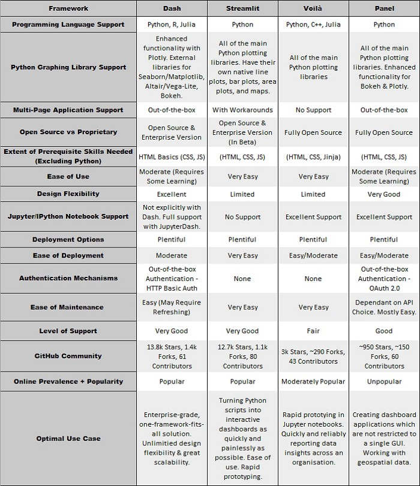

Streamlit vs Dash vs Voilà vs Panel¶
目前 Python 仪表盘生态系统中的领先框架有 Streamlit，Dash，Voilà， Panel。
框架的主要目标¶
- Streamlit
尽快将 Python 脚本转换为可共享的交互式仪表盘应用程序。
- Dash
缩小数据科学与组织其他部门之间的差距。
- Voilà
将 Jupyter/IPython 笔记本转换为独立的基于 web 的交互式仪表板应用程序，实现从数据分析的探索阶段到结果数据洞察的通信的平稳过渡。
- Panel
使用 Python 脚本文件和 Jupyter/IPython 笔记本中相同的代码创建一个灵活的框架，用于制作仪表板应用程序，而不是绑定特定的 GUI。
编程语言支持¶
- Streamlit
仅支持 Python
- Dash
支持 Python, R, Julia
- Voilà
支持 Python, C++, Julia
- Panel
仅支持 Python
最佳选择：Dash & Voilà
最糟糕的：Streamlit & Panel
Python 图形库支持¶
- Streamlit
所有主要的 Python 绘图库，包括 Matplotlib 的 Pyplot 库、Seaborn、Altair、Vega-Lite、Plotly、Bokeh、PyDeck 和 GraphViz。还提供自带的折线图、区域图、条形图和地图的绘图库。目前，你可以在 Streamlit 中包含的交互性水平是有限的。
- Dash
主要是为使用
plotly.pyPython 图形库而构建的。Dash 中存在用于替代绘图库的外部库，即 Seaborn/Matplotlib、Altair/Vega-Lite 和 Bokeh，但是这些库不是很健壮，并且与输出图的交互水平与 plotly 生成的图不在同一水平上。
- Voilà
所有主要的 Python 绘图库，包括 Matplotlib 的 Pyplot 库、Seaborn、Altair、Plotly、Bokeh、PyDeck 和 GraphViz。
- Panel
所有主要的 Python 绘图库：Matplotlib, Seaborn, Altair, Plotly, Bokeh, PyDeck, GraphViz，甚至是 R 的
ggplot库。
最佳选择：Panel 或 Voilà
最糟糕的：Dash
多页面应用程序支持¶
- Streamlit
虽然不是明确的或开箱即用的，但是可以在 Streamlit 支持论坛 上找到潜在的解决方案。
- Dash
显式支持 多页面应用程序。目前，在应用程序页面之间共享数据并不是一件简单的事情。
- Voilà
不是显式的或开箱即用的，潜在的变通方法并不真正类似于多页面应用程序。
最佳选择：Panel 或 Dash。Panel 非常适合多页面应用，因为它可以轻松地在多个页面之间共享信息，这样你就可以构建功能齐全的多页面应用。Dash 支持多页面应用程序的性能比其他框架更好，它可以在不刷新实际网页的情况下改变 URL，从而大大减少了页面加载时间，但是，页面之间的变量共享需要明确地完成，当创建需要频繁共享大量信息的应用程序时，这可能会阻碍其在现实世界中的适用性。
最糟糕的：Voilà。它没有显式的支持，而且解决方案也不真正类似于多页面应用程序。
开源 vs 专有¶
- Streamlit
目前完全开源，然而，有一个企业版本正在测试中，叫做“团队 Streamlit”。
- Dash
它既是一个开源框架，也是一个具有许多附加特性的企业版本。
- Voilà
完全开放源码。
- Panel
完全开放源码。
最佳选择：Voilà & Panel
最糟糕的：无
所需的必备技能(Python 除外)¶
- Streamlit
要获得 Streamlit 的全部效用，不需要其他先决条件的技能。HTML、CSS 和 JavaScript 可以增强您对框架的使用，从而产生更复杂、更具有视觉吸引力的应用程序布局。
- Dash
您将需要 HTML 的基本知识。CSS 知识将使您能够更好地控制应用程序设计决策。
- Voilà
如果您想要对仪表板的布局和外观进行完全的设计控制，则需要一些 HTML、CSS 和 Jinja 的知识。
- Panel
除了 Python 之外，开始使用 Panel 不需要任何技能。HTML、CSS 和 JavaScript 知识将在开发过程中提供帮助，特别是在样式选择方面。
最佳选择：Streamlit。基于纯粹的 Python 背景，Streamlit 将为您处理大量的设计决策，而不需要您学习任何 HTML 或 CSS。
最糟糕的：Dash。我只选择 Dash 在这里，因为我觉得你可以不知道任何 HTML 或 CSS 的其他3个框架，但与 Dash 你将需要理解 HTML 正确布局你的应用程序，并知道什么组件是什么。
易用性¶
- Streamlit
Streamlit 的 API 是最小的，易于管理，用纯 Python 编写，并且可以一次性读取整个 API。这是一个非常容易使用的框架。
- Dash
容易用于创建基本的仪表板应用程序，但创建复杂的应用程序布局稍微困难一些。
- Voilà
Voilà 本身非常容易用于创建基本的仪表板应用程序，但是，它并不总是简单地控制关于应用程序布局和外观的复杂之处。
- Panel
对于简单的数据仪表板应用程序来说很容易使用，但是一旦您通过了更琐碎的仪表板接口，它可能会相当棘手。
最佳选择：Streamlit。该框架的开发优先考虑的是易用性，如果不是最重要的。用 Streamlit 创建仪表板应用程序非常容易!
最糟糕的：Panel。用 Panel 创建最基本的仪表板需要大量的阅读和实验。这么说，在投入最初的几个小时后，它确实会变得更容易——但它仍然是四个框架中最复杂的。
设计适应性¶
- Streamlit
由于重点主要放在易用性上，它在布局选项上并不完全灵活。如果你精通 HTML 和 JavaScript，你可以创建自己的 Streamlit 组件，这将为你提供对应用程序布局的更多控制。总的来说，设计的灵活性对于基本仪表板是足够的，但是对于高级仪表板没有提供太多的控制。
- Dash
在我看来，Dash 的主要优势在于其令人难以置信的设计灵活性。但是，这种设计灵活性很大程度上可以归因于在使用 Python 代码的同时使用 HTML 和 CSS 代码。
- Voilà
有限的设计灵活性。它有一些有用的模板，但是在这些模板之外，唯一的选择就是构建自己的 nbconvert 模板。
- Panel
伟大的设计灵活性。各种模板，内联 HTML 和 CSS，包含外部 CSS 和 JavaScript 文件，以及创建自己的模板的能力，这是为什么 Panel 允许很大的设计灵活性的原因。
最佳选择：Dash。Dash 在设计灵活性方面遥遥领先于其他公司。这主要是由于框架对 HTML 和 CSS 的 Python 抽象。
最糟糕的：Voilà。大多数样式必须通过 IPYWidgets 直接完成，或者通过创建自己的 nbconvert 模板来完成——使用 HTML、CSS & Jinja。在撰写本文时(2021年3月)，关于创建模板的 Voilà 文档已经过时了，并且不能以当前的形式工作。
Jupyter/IPython 笔记本支持¶
- Streamlit
无
- Dash
主要的 Dash 框架不支持使用 Jupyter 笔记本，但 Plotly 最近发布了“JupyterDash”，用于在 Jupyter/IPython 环境中使用 Dash。
- Voilà
特殊 Jupyter 支持。Voilà 作为一个扩展直接从 Jupyter 笔记本电脑界面，以及 Jupyter 服务器和 Jupyter 实验室工作。该框架是一个 Jupyter 子项目。
- Panel
辉煌 Jupyter支持。Panel 在 Jupyter/IPython 笔记本环境中的工作方式与常规 Python 脚本文件几乎完全相同。
最佳选择：Voilà
最糟糕的：Streamlit
部署选项¶
- Streamlit
丰富。选项包括他们自己的 Streamlit 共享平台，MyBinder, AWS，谷歌云平台，谷歌 Colab, Azure, Heroku, JupyterHub, Apache, Nginx，作为可执行文件部署到 Windows, MacOS, Linux，甚至 Android 和 IOS，最后 ContainDS 仪表板与 JupyterHub, PythonAnywhere。
- Dash
丰富。选项包括 Heroku, MyBinder, AWS，谷歌云平台，谷歌 Colab, Azure, JupyterHub, Apache, Nginx, ContainDS Dashboards with JupyterHub, PythonAnywhere。
- Voilà
丰富。选项包括 Heroku, MyBinder, AWS，谷歌云平台，谷歌 Colab, Azure, JupyterHub, Apache, Nginx, ContainDS Dashboards with JupyterHub, PythonAnywhere。
- Panel
丰富。选项包括 AWS、MyBinder、谷歌云平台、谷歌 Colab、Azure、Heroku、JupyterHub、Apache、Nginx 和 PythonAnywhere。
最佳选择：这四个框架都有丰富的选项。
最糟糕的：无
部署的易用性¶
- Streamlit
这取决于您选择的部署环境。部署到 Sharing 平台非常简单。Streamlit 提供了关于部署到它们自己的共享平台的良好、清晰的文档。Streamlit 论坛上还有一个“部署指南 Wiki”，里面有针对不同平台的统一部署步骤。
- Dash
这取决于您选择的部署环境。与本文中提到的其他框架相比，正确设置 Dash 应用程序的环境依赖关系会稍微困难一些。Dash 的部署文档只包含了如何将 Dash 应用程序部署到 Heroku 云平台的步骤，然而，网上有很多文章清楚地展示了其他部署路径的适当部署步骤。
- Voilà
这取决于您选择的部署环境。Voilà 部署文档 演示了部署 Binder、Heroku 和谷歌 App Engine 的步骤，以及 Nginx web 服务器的部署步骤。这些文档还包含了如何使用 ngrok 共享 Voilà 应用程序的步骤，ngrok 是一个可以在互联网上安全地共享本地服务器的工具。网上有很多文章清楚地演示了其他部署选项的适当部署步骤。
- Panel
这取决于您选择的部署环境。我发现 Panel 的部署文档非常模糊和不明确。在 Panel 用户指南的“部署和导出”部分，给出了将应用程序部署到服务器或将应用程序导出到嵌入交互式的静态 HTML 页面的各种方法的步骤。关于服务器部署的详细信息可以在面板用户指南的“服务器部署”一节中找到，其中有部署到 MyBinder、Heroku 和 Microsoft Azure 的详细信息。这个页面还包含了其他可能支持 Panel 的云提供商的列表。
最佳选择：Streamlit & Voilà。部署到 Streamlit Sharing 平台非常简单。Voilà 的部署文档是这四种框架中最好的，其中自始至终都有清晰、明确的说明。
最糟糕的：Dash or Panel。由于环境设置的原因，Dash 稍微更难部署。Panel 的部署文档讨论了可以部署 Panel 应用程序的各种方式，但在解释中明显缺乏深度。
用户认证机制¶
- Streamlit
无
- Dash
Dash 通过使用 HTTP 基本身份验证 的
dash-auth包明确地为用户提供身份验证机制。
- Voilà
无
- Panel
Panel 提供 开箱即用的身份验证机制。它使用 OAuth 2.0 协议，本质上是将身份验证外包给第三方——例如，使用 GitHub 或谷歌登录。
最佳选择：Panel & Dash
最糟糕的：Streamlit & Voilà
易于维护¶
- Streamlit
就像代码维护一样简单。他们还维护了一个清晰而简洁的变更日志，用于监控新添加的和最近弃用的特性。
- Dash
相对容易。根据您上次使用 Dash 编程的时间，您可能需要重新熟悉代码结构，然后才能继续开发应用程序。他们还维护了一个清晰而简洁的变更日志，用于监控新添加的和最近弃用的特性。
- Voilà
该框架不包含任何 Voilà-specific code 元素，这意味着维护很简单，因为它只是维护 Python 代码。
- Panel
应用程序维护的简单程度取决于您最初使用的是哪个 API 来创建应用程序，而像 Interact API 这样更基本的 API 比 Callbacks API 这样的其他 API 更容易维护。他们还维护了一个清晰而简洁的变更日志，用于监控新添加的和最近弃用的特性。
最佳选择：Streamlit & Voilà
最糟糕的：Dash 或 Panel
网络流行度和人气¶
- Streamlit
截至 2021 年 2 月，谷歌和 Stack Overflow 搜索’streamlit’分别返回 241,000 和 485 结果。
- Dash
截至 2021 年 2 月，谷歌和 Stack Overflow 搜索’Dash’分别返回 905,000 和 500 结果。
- Voilà
截至 2021 年 2 月，谷歌和 Stack Overflow 搜索’Voilà’分别返回 1,009,000 和 75 结果。
- Voilà
截至 2021 年 2 月，谷歌和 Stack Overflow 搜索’Voilà’分别返回 6,650 和 45 结果。
最佳选择：Dash
最糟糕的：Panel
支持层次¶
- Streamlit
没有支持聊天或电子邮件。活跃的用户支持论坛。Streamlit GitHub 知识库的问题部分有 940 个关闭的问题和 540 个开放的问题。(2021年2月)
- Dash
没有支持聊天或电子邮件。活跃的用户支持论坛。Dash GitHub 仓库的问题部分有 558 个封闭问题和 392 个开放问题。
- Voilà
没有支持电子邮件，但是 Voilà 在 4 个框架中有最接近于专用支持聊天的东西。支持聊天是由 QuantStack 为他们的几个项目维护的，包括 Voilà。特别感谢 Carlos Herrero 让我意识到这个支持聊天。没有具体的支持论坛。问题在大型 Jupyter 社区论坛上处理。Voilà GitHub 仓库的问题部分有 269 个关闭的问题和 172 个开放的问题。
- Panel
没有支持聊天或电子邮件。相对活跃的用户支持论坛。Panel GitHub 仓库的问题部分有 664 个关闭问题和 316 个开放问题。
最佳选择：Streamlit & Dash
最糟糕的：无
最佳场景¶
- Streamlit
如果你已经有了一个 Python 代码库，你希望尽可能快速和轻松地转换成一个交互式仪表板，那么这个视觉上很吸引人的框架非常适合你。它是四个框架中最容易使用的。
- Dash
如果您正在寻找企业级的全框架解决方案，或者您对 web 开发有基本的了解，那么 Dash 是最好的选择。
- Voilà
在以下场景中使用：您有一个 Jupyter/IPython 笔记本，已经进行了一些数据分析，并且您希望与同事共享数据洞察，而不会让代码单元弄乱视图。Voilà 也是一个非常棒的工具，可以在整个组织内快速可靠地报告数据。
- Panel
创建不局限于单个 GUI 的仪表板应用程序。当您的数据主要是地理空间数据时，面板是一个很好的选择。Panel 是 HoloViz 生态系统的一部分，它可以与 GeoViews Python 库完美地工作，用于处理地理空间数据。Panel 处理这种形式的数据比 Dash、Streamlit 或 Voilà 更好。
结论¶
